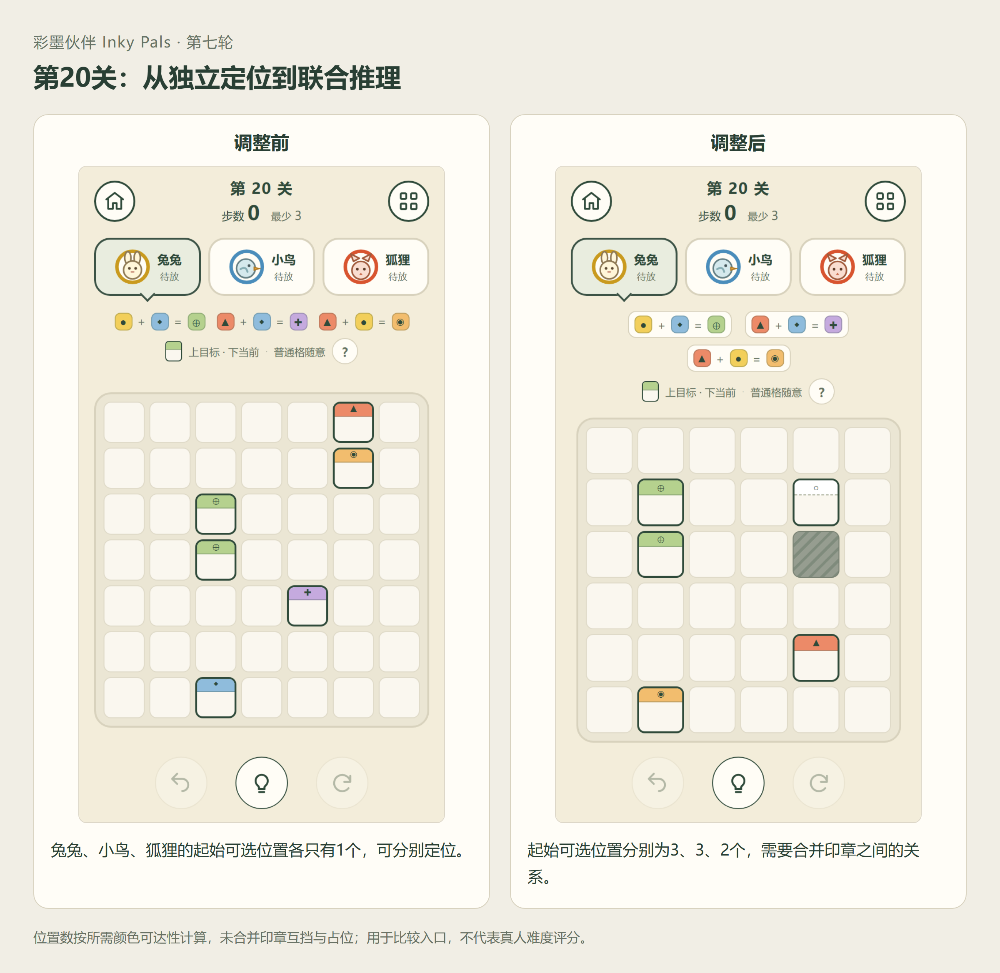
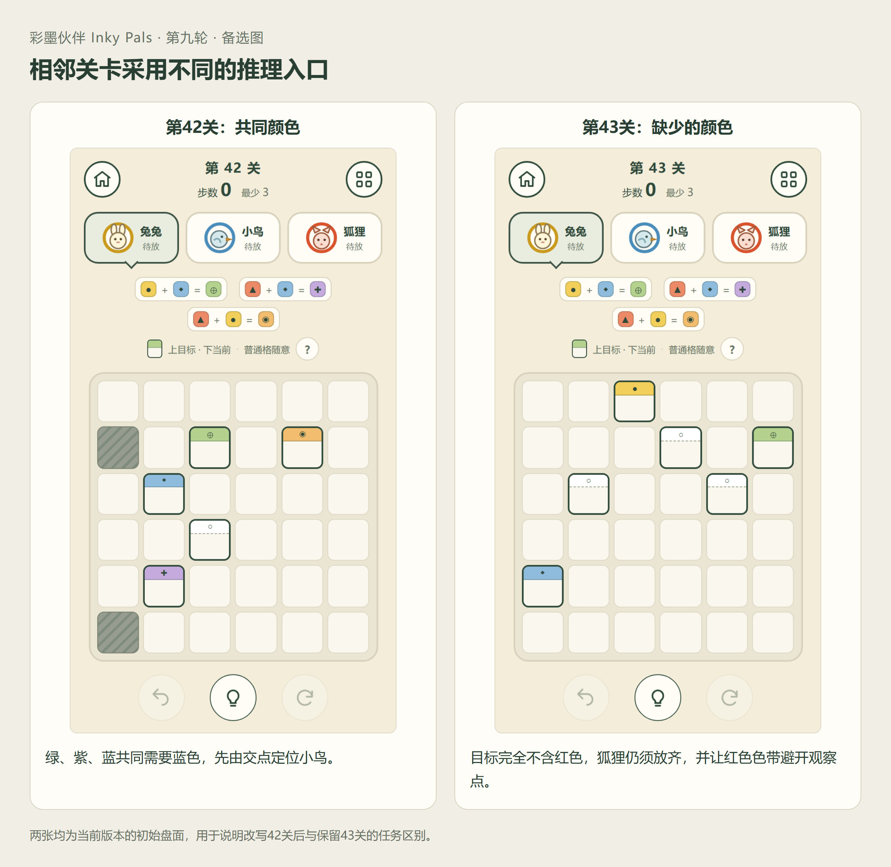
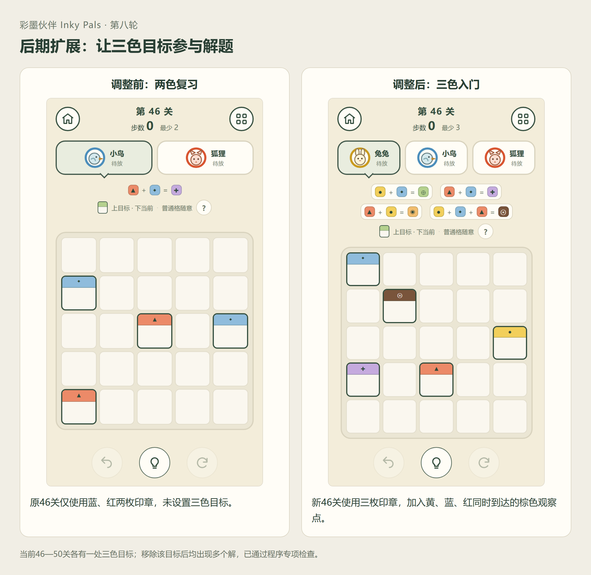
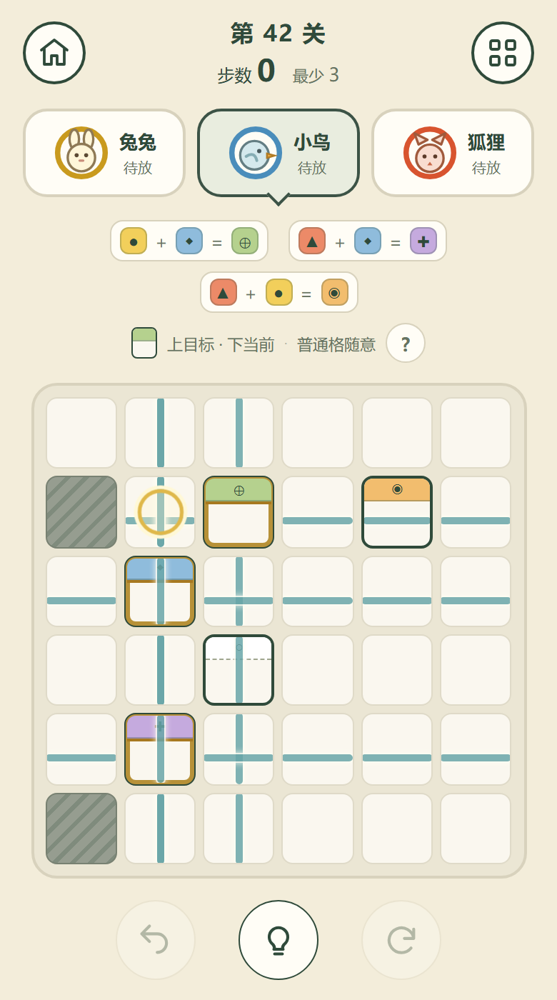

第20关：让几枚印章一起参与判断
旧版三枚印章的单色候选各只有一个位置，玩家容易逐枚完成。新版让候选保留到3、3、2个位置，再由混色、留白和遮挡共同收敛。
第18、19关保留轻复习，第20关承担联合推理。挑战来自线索之间的依赖。
候选数量来自仅考虑所需颜色可达性的简化模型，不能直接当作玩家难度评分。
彩墨伙伴 · Inky Pals
用混色连接线索，用遮挡改变布局。围绕少量规则，将三关原型推进为一款50关的H5逻辑解谜游戏。
个人项目 · 玩法与关卡设计、试玩迭代、AI协作开发
2026.11
我喜欢《Meowdoku》中通过排除、组合线索确定位置的体验。前期尝试过动物排序、光路和位置约束等方向，随后把问题收敛为：放下一枚动物，能否同时改变周围环境和其他动物的位置判断？
印章留下颜色痕迹，也会挡住其他印章的色带。玩家需要根据局部目标，找到能让所有线索同时成立的布局。动物印章与纸面的表达，帮助呈现这种相互影响。
兔兔、小鸟、狐狸分别对应黄、蓝、红，向上下左右留下色带。色带交汇产生绿、紫、橙，三色交汇显示为棕色。
色带遇到墙、其他印章或边界停止。印章所在格不染色，放置顺序不改变最终结果。
观察点上方是目标色，下方是当前色。留白观察点不能染色，普通格颜色不限。放齐印章并满足全部观察点后自动通关，无须将整盘染满。
旧版三枚印章的单色候选各只有一个位置，玩家容易逐枚完成。新版让候选保留到3、3、2个位置，再由混色、留白和遮挡共同收敛。
第18、19关保留轻复习，第20关承担联合推理。挑战来自线索之间的依赖。
候选数量来自仅考虑所需颜色可达性的简化模型，不能直接当作玩家难度评分。
两关原先都依赖缺色与遮挡，任务过于相似。我保留第43关“没有红色目标，也必须放下狐狸”的核心，将第42关改为从绿色、紫色和蓝色目标中寻找共同的蓝色来源。
玩家先从多个配方提取共同颜色，再在下一关利用没有出现的颜色判断遮挡，延续熟悉规则并切换推理方式。

后五关各加入一处三色混棕目标，再与留白、墙和互挡组合。第46关用小盘介绍，第50关综合运用。
程序检查中，移除这处三色目标后，五关均出现多个解。这项检查用于确认新线索参与了答案的确定。

朋友试玩反馈开局说明偏复杂，也有人误以为同列就一定能混色。教学因此改为关卡内单张卡片，在首次使用规则时展示，保留跳过和重看入口。
第1关只讲放置、观察点与留白；第2关讲墙，第3关讲黄蓝混绿，第4关讲互挡。红色配方与三色目标到对应关卡再解释。问号入口提供可切换的完整图示规则，跳入后期也能查阅放置、遮挡和混色，不改变当前棋盘与步数。
早期文字提示逐步改为两段动画：第一次高亮相关观察点和行列，让玩家看到共同位置；再次点击才演示一枚印章的落点，不自动放置。
满足条件后自动通关，可留在本关查看结果。撤销恢复步数，最少步通关留下星标；使用提示不影响星标，成绩只记录步数表现。

单色与留白 → 障碍 → 两色混绿 → 印章互挡。
紫色、橙色配方各用一关介绍，随后组合应用，以复习关缓冲后进入联合推理。
交替使用共同颜色、同线分段、留白与遮挡；小盘复习穿插综合挑战。
没有对应颜色目标仍须放章，再进入三色混合与综合布局。
2026年11月10日，对最终游戏程序枚举50关，均只有一个合法布局，预存答案满足线索。此前浏览器自动化检查覆盖关卡落子、自动通关与不同窗口尺寸，终关返回首页另做专项检查。
朋友试玩帮助发现教学、遮挡理解、配方区分和成绩展示的问题。调整后的教学与提示是否更易理解，还需要后续试玩；现有反馈无法推导留存率或商业表现。
这个项目让我把“规则简洁”推进到更具体的判断：新线索是否真正约束答案，相邻关卡是否要求不同的思考，提示是否让玩家理解关系。这些判断也成为后续扩关和修改的依据。